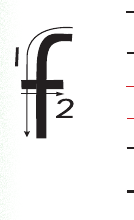

A picture of an illustration of fish, the example word for this letter lesson.fish
Trace the letter f.

A picture of the stroke-direction diagram for lowercase f. Follow the numbered arrows. Start at the top, curve left and draw the long stroke down, then add the short cross stroke from left to right.